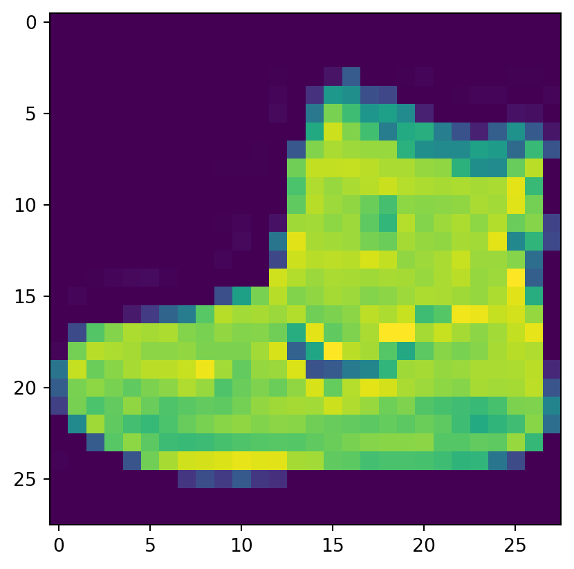

Code
import tensorflow as tf
import numpy as np
from tensorflow import keras
import os
print(tf.__version__)2.16.1by Laurence Moroney


pooling

import tensorflow as tf
import numpy as np
from tensorflow import keras
import os
print(tf.__version__)2.16.1# Load the Fashion MNIST dataset
fmnist = tf.keras.datasets.fashion_mnist# Load the training and test split of the Fashion MNIST dataset
(training_images, training_labels), (test_images, test_labels) = fmnist.load_data()import numpy as np
import matplotlib.pyplot as plt
# You can put between 0 to 59999 here
index = 0
# Set number of characters per row when printing
np.set_printoptions(linewidth=320)
# Print the label and image
print(f'LABEL: {training_labels[index]}')
print(f'\nIMAGE PIXEL ARRAY:\n {training_images[index]}')LABEL: 9
IMAGE PIXEL ARRAY:
[[ 0 0 0 0 0 0 0 0 0 0 0 0 0 0 0 0 0 0 0 0 0 0 0 0 0 0 0 0]
[ 0 0 0 0 0 0 0 0 0 0 0 0 0 0 0 0 0 0 0 0 0 0 0 0 0 0 0 0]
[ 0 0 0 0 0 0 0 0 0 0 0 0 0 0 0 0 0 0 0 0 0 0 0 0 0 0 0 0]
[ 0 0 0 0 0 0 0 0 0 0 0 0 1 0 0 13 73 0 0 1 4 0 0 0 0 1 1 0]
[ 0 0 0 0 0 0 0 0 0 0 0 0 3 0 36 136 127 62 54 0 0 0 1 3 4 0 0 3]
[ 0 0 0 0 0 0 0 0 0 0 0 0 6 0 102 204 176 134 144 123 23 0 0 0 0 12 10 0]
[ 0 0 0 0 0 0 0 0 0 0 0 0 0 0 155 236 207 178 107 156 161 109 64 23 77 130 72 15]
[ 0 0 0 0 0 0 0 0 0 0 0 1 0 69 207 223 218 216 216 163 127 121 122 146 141 88 172 66]
[ 0 0 0 0 0 0 0 0 0 1 1 1 0 200 232 232 233 229 223 223 215 213 164 127 123 196 229 0]
[ 0 0 0 0 0 0 0 0 0 0 0 0 0 183 225 216 223 228 235 227 224 222 224 221 223 245 173 0]
[ 0 0 0 0 0 0 0 0 0 0 0 0 0 193 228 218 213 198 180 212 210 211 213 223 220 243 202 0]
[ 0 0 0 0 0 0 0 0 0 1 3 0 12 219 220 212 218 192 169 227 208 218 224 212 226 197 209 52]
[ 0 0 0 0 0 0 0 0 0 0 6 0 99 244 222 220 218 203 198 221 215 213 222 220 245 119 167 56]
[ 0 0 0 0 0 0 0 0 0 4 0 0 55 236 228 230 228 240 232 213 218 223 234 217 217 209 92 0]
[ 0 0 1 4 6 7 2 0 0 0 0 0 237 226 217 223 222 219 222 221 216 223 229 215 218 255 77 0]
[ 0 3 0 0 0 0 0 0 0 62 145 204 228 207 213 221 218 208 211 218 224 223 219 215 224 244 159 0]
[ 0 0 0 0 18 44 82 107 189 228 220 222 217 226 200 205 211 230 224 234 176 188 250 248 233 238 215 0]
[ 0 57 187 208 224 221 224 208 204 214 208 209 200 159 245 193 206 223 255 255 221 234 221 211 220 232 246 0]
[ 3 202 228 224 221 211 211 214 205 205 205 220 240 80 150 255 229 221 188 154 191 210 204 209 222 228 225 0]
[ 98 233 198 210 222 229 229 234 249 220 194 215 217 241 65 73 106 117 168 219 221 215 217 223 223 224 229 29]
[ 75 204 212 204 193 205 211 225 216 185 197 206 198 213 240 195 227 245 239 223 218 212 209 222 220 221 230 67]
[ 48 203 183 194 213 197 185 190 194 192 202 214 219 221 220 236 225 216 199 206 186 181 177 172 181 205 206 115]
[ 0 122 219 193 179 171 183 196 204 210 213 207 211 210 200 196 194 191 195 191 198 192 176 156 167 177 210 92]
[ 0 0 74 189 212 191 175 172 175 181 185 188 189 188 193 198 204 209 210 210 211 188 188 194 192 216 170 0]
[ 2 0 0 0 66 200 222 237 239 242 246 243 244 221 220 193 191 179 182 182 181 176 166 168 99 58 0 0]
[ 0 0 0 0 0 0 0 40 61 44 72 41 35 0 0 0 0 0 0 0 0 0 0 0 0 0 0 0]
[ 0 0 0 0 0 0 0 0 0 0 0 0 0 0 0 0 0 0 0 0 0 0 0 0 0 0 0 0]
[ 0 0 0 0 0 0 0 0 0 0 0 0 0 0 0 0 0 0 0 0 0 0 0 0 0 0 0 0]]# Visualize the image
plt.imshow(training_images[index])
You’ll notice that all of the values in the number are between 0 and 255. If you are training a neural network especially in image processing, for various reasons it will usually learn better if you scale all values to between 0 and 1. It’s a process called normalization and fortunately in Python, it’s easy to normalize an array without looping. You do it like this:
# Normalize the pixel values of the train and test images
training_images = training_images / 255.0
test_images = test_images / 255.0input 28 by 28 black&white image
flow into32 3by3 convolutional layers and 2by2 pooling
output is 10 neural(0-9) with softmax function
# Define the model
model = tf.keras.models.Sequential([
# Add convolutions and max pooling
tf.keras.layers.Conv2D(32, (3,3), activation='relu', input_shape=(28, 28, 1)),
tf.keras.layers.MaxPooling2D(2, 2),
tf.keras.layers.Conv2D(32, (3,3), activation='relu'),
tf.keras.layers.MaxPooling2D(2,2),
# Add the same layers as before
tf.keras.layers.Flatten(),
tf.keras.layers.Dense(128, activation='relu'),
tf.keras.layers.Dense(10, activation='softmax')
])# Print the model summary
model.summary()Model: "sequential_2"
┏━━━━━━━━━━━━━━━━━━━━━━━━━━━━━━━━━┳━━━━━━━━━━━━━━━━━━━━━━━━┳━━━━━━━━━━━━━━━┓ ┃ Layer (type) ┃ Output Shape ┃ Param # ┃ ┡━━━━━━━━━━━━━━━━━━━━━━━━━━━━━━━━━╇━━━━━━━━━━━━━━━━━━━━━━━━╇━━━━━━━━━━━━━━━┩ │ conv2d_4 (Conv2D) │ (None, 26, 26, 32) │ 320 │ ├─────────────────────────────────┼────────────────────────┼───────────────┤ │ max_pooling2d_4 (MaxPooling2D) │ (None, 13, 13, 32) │ 0 │ ├─────────────────────────────────┼────────────────────────┼───────────────┤ │ conv2d_5 (Conv2D) │ (None, 11, 11, 32) │ 9,248 │ ├─────────────────────────────────┼────────────────────────┼───────────────┤ │ max_pooling2d_5 (MaxPooling2D) │ (None, 5, 5, 32) │ 0 │ ├─────────────────────────────────┼────────────────────────┼───────────────┤ │ flatten_2 (Flatten) │ (None, 800) │ 0 │ ├─────────────────────────────────┼────────────────────────┼───────────────┤ │ dense_4 (Dense) │ (None, 128) │ 102,528 │ ├─────────────────────────────────┼────────────────────────┼───────────────┤ │ dense_5 (Dense) │ (None, 10) │ 1,290 │ └─────────────────────────────────┴────────────────────────┴───────────────┘
Total params: 113,386 (442.91 KB)
Trainable params: 113,386 (442.91 KB)
Non-trainable params: 0 (0.00 B)
# the v2.11+ optimizer `tf.keras.optimizers.Adam` runs slowly on M1/M2 Macs
model.compile(optimizer = tf.optimizers.Adam(),
loss = 'sparse_categorical_crossentropy',
metrics=['accuracy'])class myCallback(tf.keras.callbacks.Callback):
def on_epoch_end(self, epoch, logs={}):
'''
Halts the training when the loss falls below 0.4
Args:
epoch (integer) - index of epoch (required but unused in the function definition below)
logs (dict) - metric results from the training epoch
'''
# Check the loss
if(logs.get('loss') < 0.3):
# Stop if threshold is met
print("\nLoss is lower than 0.4 so cancelling training!")
print("cancelling training with:")
print(epoch+1)
self.model.stop_training = True
# Instantiate class
callbacks = myCallback()model.fit(training_images, training_labels, epochs=10,callbacks=[callbacks])Epoch 1/10
1/1875 ━━━━━━━━━━━━━━━━━━━━ 10:33 338ms/step - accuracy: 0.0938 - loss: 2.3688 12/1875 ━━━━━━━━━━━━━━━━━━━━ 8s 5ms/step - accuracy: 0.2628 - loss: 2.2724 23/1875 ━━━━━━━━━━━━━━━━━━━━ 8s 5ms/step - accuracy: 0.2986 - loss: 2.1824 35/1875 ━━━━━━━━━━━━━━━━━━━━ 8s 5ms/step - accuracy: 0.3336 - loss: 2.0582 46/1875 ━━━━━━━━━━━━━━━━━━━━ 8s 5ms/step - accuracy: 0.3607 - loss: 1.9535 57/1875 ━━━━━━━━━━━━━━━━━━━━ 8s 5ms/step - accuracy: 0.3849 - loss: 1.8617 68/1875 ━━━━━━━━━━━━━━━━━━━━ 8s 5ms/step - accuracy: 0.4071 - loss: 1.7814 79/1875 ━━━━━━━━━━━━━━━━━━━━ 8s 5ms/step - accuracy: 0.4270 - loss: 1.7110 90/1875 ━━━━━━━━━━━━━━━━━━━━ 8s 5ms/step - accuracy: 0.4443 - loss: 1.6500 101/1875 ━━━━━━━━━━━━━━━━━━━━ 8s 5ms/step - accuracy: 0.4593 - loss: 1.5967 112/1875 ━━━━━━━━━━━━━━━━━━━━ 8s 5ms/step - accuracy: 0.4730 - loss: 1.5488 123/1875 ━━━━━━━━━━━━━━━━━━━━ 8s 5ms/step - accuracy: 0.4856 - loss: 1.5058 134/1875 ━━━━━━━━━━━━━━━━━━━━ 8s 5ms/step - accuracy: 0.4971 - loss: 1.4671 145/1875 ━━━━━━━━━━━━━━━━━━━━ 8s 5ms/step - accuracy: 0.5076 - loss: 1.4320 156/1875 ━━━━━━━━━━━━━━━━━━━━ 8s 5ms/step - accuracy: 0.5172 - loss: 1.4001 167/1875 ━━━━━━━━━━━━━━━━━━━━ 7s 5ms/step - accuracy: 0.5258 - loss: 1.3710 177/1875 ━━━━━━━━━━━━━━━━━━━━ 7s 5ms/step - accuracy: 0.5331 - loss: 1.3466 188/1875 ━━━━━━━━━━━━━━━━━━━━ 7s 5ms/step - accuracy: 0.5407 - loss: 1.3218 199/1875 ━━━━━━━━━━━━━━━━━━━━ 7s 5ms/step - accuracy: 0.5476 - loss: 1.2990 210/1875 ━━━━━━━━━━━━━━━━━━━━ 7s 5ms/step - accuracy: 0.5540 - loss: 1.2779 221/1875 ━━━━━━━━━━━━━━━━━━━━ 7s 5ms/step - accuracy: 0.5600 - loss: 1.2583 232/1875 ━━━━━━━━━━━━━━━━━━━━ 7s 5ms/step - accuracy: 0.5657 - loss: 1.2399 243/1875 ━━━━━━━━━━━━━━━━━━━━ 7s 5ms/step - accuracy: 0.5711 - loss: 1.2225 254/1875 ━━━━━━━━━━━━━━━━━━━━ 7s 5ms/step - accuracy: 0.5761 - loss: 1.2062 265/1875 ━━━━━━━━━━━━━━━━━━━━ 7s 5ms/step - accuracy: 0.5810 - loss: 1.1908 276/1875 ━━━━━━━━━━━━━━━━━━━━ 7s 5ms/step - accuracy: 0.5855 - loss: 1.1762 287/1875 ━━━━━━━━━━━━━━━━━━━━ 7s 5ms/step - accuracy: 0.5898 - loss: 1.1624 298/1875 ━━━━━━━━━━━━━━━━━━━━ 7s 5ms/step - accuracy: 0.5938 - loss: 1.1493 310/1875 ━━━━━━━━━━━━━━━━━━━━ 7s 5ms/step - accuracy: 0.5980 - loss: 1.1358 321/1875 ━━━━━━━━━━━━━━━━━━━━ 7s 5ms/step - accuracy: 0.6017 - loss: 1.1240 332/1875 ━━━━━━━━━━━━━━━━━━━━ 7s 5ms/step - accuracy: 0.6052 - loss: 1.1127 343/1875 ━━━━━━━━━━━━━━━━━━━━ 7s 5ms/step - accuracy: 0.6086 - loss: 1.1019 354/1875 ━━━━━━━━━━━━━━━━━━━━ 7s 5ms/step - accuracy: 0.6118 - loss: 1.0916 365/1875 ━━━━━━━━━━━━━━━━━━━━ 7s 5ms/step - accuracy: 0.6150 - loss: 1.0817 376/1875 ━━━━━━━━━━━━━━━━━━━━ 7s 5ms/step - accuracy: 0.6180 - loss: 1.0723 387/1875 ━━━━━━━━━━━━━━━━━━━━ 6s 5ms/step - accuracy: 0.6209 - loss: 1.0633 398/1875 ━━━━━━━━━━━━━━━━━━━━ 6s 5ms/step - accuracy: 0.6237 - loss: 1.0546 409/1875 ━━━━━━━━━━━━━━━━━━━━ 6s 5ms/step - accuracy: 0.6263 - loss: 1.0462 421/1875 ━━━━━━━━━━━━━━━━━━━━ 6s 5ms/step - accuracy: 0.6292 - loss: 1.0375 432/1875 ━━━━━━━━━━━━━━━━━━━━ 6s 5ms/step - accuracy: 0.6317 - loss: 1.0298 443/1875 ━━━━━━━━━━━━━━━━━━━━ 6s 5ms/step - accuracy: 0.6341 - loss: 1.0224 454/1875 ━━━━━━━━━━━━━━━━━━━━ 6s 5ms/step - accuracy: 0.6364 - loss: 1.0151 465/1875 ━━━━━━━━━━━━━━━━━━━━ 6s 5ms/step - accuracy: 0.6387 - loss: 1.0081 476/1875 ━━━━━━━━━━━━━━━━━━━━ 6s 5ms/step - accuracy: 0.6409 - loss: 1.0013 487/1875 ━━━━━━━━━━━━━━━━━━━━ 6s 5ms/step - accuracy: 0.6431 - loss: 0.9947 496/1875 ━━━━━━━━━━━━━━━━━━━━ 6s 5ms/step - accuracy: 0.6448 - loss: 0.9895 507/1875 ━━━━━━━━━━━━━━━━━━━━ 6s 5ms/step - accuracy: 0.6469 - loss: 0.9832 518/1875 ━━━━━━━━━━━━━━━━━━━━ 6s 5ms/step - accuracy: 0.6489 - loss: 0.9771 529/1875 ━━━━━━━━━━━━━━━━━━━━ 6s 5ms/step - accuracy: 0.6508 - loss: 0.9712 540/1875 ━━━━━━━━━━━━━━━━━━━━ 6s 5ms/step - accuracy: 0.6527 - loss: 0.9654 551/1875 ━━━━━━━━━━━━━━━━━━━━ 6s 5ms/step - accuracy: 0.6546 - loss: 0.9598 562/1875 ━━━━━━━━━━━━━━━━━━━━ 6s 5ms/step - accuracy: 0.6564 - loss: 0.9543 573/1875 ━━━━━━━━━━━━━━━━━━━━ 6s 5ms/step - accuracy: 0.6582 - loss: 0.9489 584/1875 ━━━━━━━━━━━━━━━━━━━━ 6s 5ms/step - accuracy: 0.6600 - loss: 0.9436 595/1875 ━━━━━━━━━━━━━━━━━━━━ 6s 5ms/step - accuracy: 0.6617 - loss: 0.9385 606/1875 ━━━━━━━━━━━━━━━━━━━━ 5s 5ms/step - accuracy: 0.6634 - loss: 0.9336 617/1875 ━━━━━━━━━━━━━━━━━━━━ 5s 5ms/step - accuracy: 0.6650 - loss: 0.9287 628/1875 ━━━━━━━━━━━━━━━━━━━━ 5s 5ms/step - accuracy: 0.6666 - loss: 0.9240 639/1875 ━━━━━━━━━━━━━━━━━━━━ 5s 5ms/step - accuracy: 0.6681 - loss: 0.9194 650/1875 ━━━━━━━━━━━━━━━━━━━━ 5s 5ms/step - accuracy: 0.6696 - loss: 0.9149 659/1875 ━━━━━━━━━━━━━━━━━━━━ 5s 5ms/step - accuracy: 0.6708 - loss: 0.9113 664/1875 ━━━━━━━━━━━━━━━━━━━━ 5s 5ms/step - accuracy: 0.6715 - loss: 0.9093 675/1875 ━━━━━━━━━━━━━━━━━━━━ 5s 5ms/step - accuracy: 0.6730 - loss: 0.9050 686/1875 ━━━━━━━━━━━━━━━━━━━━ 5s 5ms/step - accuracy: 0.6744 - loss: 0.9007 696/1875 ━━━━━━━━━━━━━━━━━━━━ 5s 5ms/step - accuracy: 0.6756 - loss: 0.8970 707/1875 ━━━━━━━━━━━━━━━━━━━━ 5s 5ms/step - accuracy: 0.6770 - loss: 0.8929 718/1875 ━━━━━━━━━━━━━━━━━━━━ 5s 5ms/step - accuracy: 0.6784 - loss: 0.8890 729/1875 ━━━━━━━━━━━━━━━━━━━━ 5s 5ms/step - accuracy: 0.6797 - loss: 0.8851 740/1875 ━━━━━━━━━━━━━━━━━━━━ 5s 5ms/step - accuracy: 0.6810 - loss: 0.8813 751/1875 ━━━━━━━━━━━━━━━━━━━━ 5s 5ms/step - accuracy: 0.6822 - loss: 0.8776 762/1875 ━━━━━━━━━━━━━━━━━━━━ 5s 5ms/step - accuracy: 0.6835 - loss: 0.8739 773/1875 ━━━━━━━━━━━━━━━━━━━━ 5s 5ms/step - accuracy: 0.6847 - loss: 0.8704 784/1875 ━━━━━━━━━━━━━━━━━━━━ 5s 5ms/step - accuracy: 0.6859 - loss: 0.8668 795/1875 ━━━━━━━━━━━━━━━━━━━━ 5s 5ms/step - accuracy: 0.6871 - loss: 0.8634 806/1875 ━━━━━━━━━━━━━━━━━━━━ 5s 5ms/step - accuracy: 0.6883 - loss: 0.8600 817/1875 ━━━━━━━━━━━━━━━━━━━━ 5s 5ms/step - accuracy: 0.6894 - loss: 0.8567 828/1875 ━━━━━━━━━━━━━━━━━━━━ 4s 5ms/step - accuracy: 0.6905 - loss: 0.8534 839/1875 ━━━━━━━━━━━━━━━━━━━━ 4s 5ms/step - accuracy: 0.6916 - loss: 0.8502 849/1875 ━━━━━━━━━━━━━━━━━━━━ 4s 5ms/step - accuracy: 0.6926 - loss: 0.8473 859/1875 ━━━━━━━━━━━━━━━━━━━━ 4s 5ms/step - accuracy: 0.6936 - loss: 0.8445 870/1875 ━━━━━━━━━━━━━━━━━━━━ 4s 5ms/step - accuracy: 0.6947 - loss: 0.8414 881/1875 ━━━━━━━━━━━━━━━━━━━━ 4s 5ms/step - accuracy: 0.6957 - loss: 0.8384 892/1875 ━━━━━━━━━━━━━━━━━━━━ 4s 5ms/step - accuracy: 0.6967 - loss: 0.8354 903/1875 ━━━━━━━━━━━━━━━━━━━━ 4s 5ms/step - accuracy: 0.6977 - loss: 0.8325 914/1875 ━━━━━━━━━━━━━━━━━━━━ 4s 5ms/step - accuracy: 0.6987 - loss: 0.8296 925/1875 ━━━━━━━━━━━━━━━━━━━━ 4s 5ms/step - accuracy: 0.6997 - loss: 0.8268 936/1875 ━━━━━━━━━━━━━━━━━━━━ 4s 5ms/step - accuracy: 0.7007 - loss: 0.8240 946/1875 ━━━━━━━━━━━━━━━━━━━━ 4s 5ms/step - accuracy: 0.7016 - loss: 0.8215 957/1875 ━━━━━━━━━━━━━━━━━━━━ 4s 5ms/step - accuracy: 0.7025 - loss: 0.8188 968/1875 ━━━━━━━━━━━━━━━━━━━━ 4s 5ms/step - accuracy: 0.7034 - loss: 0.8161 979/1875 ━━━━━━━━━━━━━━━━━━━━ 4s 5ms/step - accuracy: 0.7044 - loss: 0.8134 990/1875 ━━━━━━━━━━━━━━━━━━━━ 4s 5ms/step - accuracy: 0.7053 - loss: 0.81091001/1875 ━━━━━━━━━━━━━━━━━━━━ 4s 5ms/step - accuracy: 0.7062 - loss: 0.80831011/1875 ━━━━━━━━━━━━━━━━━━━━ 4s 5ms/step - accuracy: 0.7070 - loss: 0.80601021/1875 ━━━━━━━━━━━━━━━━━━━━ 4s 5ms/step - accuracy: 0.7078 - loss: 0.80371032/1875 ━━━━━━━━━━━━━━━━━━━━ 4s 5ms/step - accuracy: 0.7086 - loss: 0.80131043/1875 ━━━━━━━━━━━━━━━━━━━━ 3s 5ms/step - accuracy: 0.7095 - loss: 0.79891053/1875 ━━━━━━━━━━━━━━━━━━━━ 3s 5ms/step - accuracy: 0.7102 - loss: 0.79671064/1875 ━━━━━━━━━━━━━━━━━━━━ 3s 5ms/step - accuracy: 0.7110 - loss: 0.79431075/1875 ━━━━━━━━━━━━━━━━━━━━ 3s 5ms/step - accuracy: 0.7119 - loss: 0.79201086/1875 ━━━━━━━━━━━━━━━━━━━━ 3s 5ms/step - accuracy: 0.7127 - loss: 0.78971097/1875 ━━━━━━━━━━━━━━━━━━━━ 3s 5ms/step - accuracy: 0.7135 - loss: 0.78741108/1875 ━━━━━━━━━━━━━━━━━━━━ 3s 5ms/step - accuracy: 0.7143 - loss: 0.78521119/1875 ━━━━━━━━━━━━━━━━━━━━ 3s 5ms/step - accuracy: 0.7150 - loss: 0.78301130/1875 ━━━━━━━━━━━━━━━━━━━━ 3s 5ms/step - accuracy: 0.7158 - loss: 0.78081141/1875 ━━━━━━━━━━━━━━━━━━━━ 3s 5ms/step - accuracy: 0.7166 - loss: 0.77871152/1875 ━━━━━━━━━━━━━━━━━━━━ 3s 5ms/step - accuracy: 0.7173 - loss: 0.77651163/1875 ━━━━━━━━━━━━━━━━━━━━ 3s 5ms/step - accuracy: 0.7180 - loss: 0.77441174/1875 ━━━━━━━━━━━━━━━━━━━━ 3s 5ms/step - accuracy: 0.7188 - loss: 0.77241185/1875 ━━━━━━━━━━━━━━━━━━━━ 3s 5ms/step - accuracy: 0.7195 - loss: 0.77031196/1875 ━━━━━━━━━━━━━━━━━━━━ 3s 5ms/step - accuracy: 0.7202 - loss: 0.76831207/1875 ━━━━━━━━━━━━━━━━━━━━ 3s 5ms/step - accuracy: 0.7209 - loss: 0.76631218/1875 ━━━━━━━━━━━━━━━━━━━━ 3s 5ms/step - accuracy: 0.7216 - loss: 0.76431229/1875 ━━━━━━━━━━━━━━━━━━━━ 3s 5ms/step - accuracy: 0.7223 - loss: 0.76241240/1875 ━━━━━━━━━━━━━━━━━━━━ 3s 5ms/step - accuracy: 0.7230 - loss: 0.76041251/1875 ━━━━━━━━━━━━━━━━━━━━ 2s 5ms/step - accuracy: 0.7237 - loss: 0.75851262/1875 ━━━━━━━━━━━━━━━━━━━━ 2s 5ms/step - accuracy: 0.7243 - loss: 0.75661273/1875 ━━━━━━━━━━━━━━━━━━━━ 2s 5ms/step - accuracy: 0.7250 - loss: 0.75471284/1875 ━━━━━━━━━━━━━━━━━━━━ 2s 5ms/step - accuracy: 0.7257 - loss: 0.75291295/1875 ━━━━━━━━━━━━━━━━━━━━ 2s 5ms/step - accuracy: 0.7263 - loss: 0.75101306/1875 ━━━━━━━━━━━━━━━━━━━━ 2s 5ms/step - accuracy: 0.7270 - loss: 0.74921317/1875 ━━━━━━━━━━━━━━━━━━━━ 2s 5ms/step - accuracy: 0.7276 - loss: 0.74741328/1875 ━━━━━━━━━━━━━━━━━━━━ 2s 5ms/step - accuracy: 0.7282 - loss: 0.74571339/1875 ━━━━━━━━━━━━━━━━━━━━ 2s 5ms/step - accuracy: 0.7289 - loss: 0.74391350/1875 ━━━━━━━━━━━━━━━━━━━━ 2s 5ms/step - accuracy: 0.7295 - loss: 0.74221361/1875 ━━━━━━━━━━━━━━━━━━━━ 2s 5ms/step - accuracy: 0.7301 - loss: 0.74051372/1875 ━━━━━━━━━━━━━━━━━━━━ 2s 5ms/step - accuracy: 0.7307 - loss: 0.73881383/1875 ━━━━━━━━━━━━━━━━━━━━ 2s 5ms/step - accuracy: 0.7313 - loss: 0.73711394/1875 ━━━━━━━━━━━━━━━━━━━━ 2s 5ms/step - accuracy: 0.7319 - loss: 0.73551405/1875 ━━━━━━━━━━━━━━━━━━━━ 2s 5ms/step - accuracy: 0.7325 - loss: 0.73381416/1875 ━━━━━━━━━━━━━━━━━━━━ 2s 5ms/step - accuracy: 0.7331 - loss: 0.73221427/1875 ━━━━━━━━━━━━━━━━━━━━ 2s 5ms/step - accuracy: 0.7336 - loss: 0.73061438/1875 ━━━━━━━━━━━━━━━━━━━━ 2s 5ms/step - accuracy: 0.7342 - loss: 0.72901449/1875 ━━━━━━━━━━━━━━━━━━━━ 2s 5ms/step - accuracy: 0.7348 - loss: 0.72741460/1875 ━━━━━━━━━━━━━━━━━━━━ 1s 5ms/step - accuracy: 0.7353 - loss: 0.72581471/1875 ━━━━━━━━━━━━━━━━━━━━ 1s 5ms/step - accuracy: 0.7359 - loss: 0.72431482/1875 ━━━━━━━━━━━━━━━━━━━━ 1s 5ms/step - accuracy: 0.7364 - loss: 0.72281493/1875 ━━━━━━━━━━━━━━━━━━━━ 1s 5ms/step - accuracy: 0.7370 - loss: 0.72121504/1875 ━━━━━━━━━━━━━━━━━━━━ 1s 5ms/step - accuracy: 0.7375 - loss: 0.71971515/1875 ━━━━━━━━━━━━━━━━━━━━ 1s 5ms/step - accuracy: 0.7381 - loss: 0.71831526/1875 ━━━━━━━━━━━━━━━━━━━━ 1s 5ms/step - accuracy: 0.7386 - loss: 0.71681537/1875 ━━━━━━━━━━━━━━━━━━━━ 1s 5ms/step - accuracy: 0.7391 - loss: 0.71531548/1875 ━━━━━━━━━━━━━━━━━━━━ 1s 5ms/step - accuracy: 0.7396 - loss: 0.71391559/1875 ━━━━━━━━━━━━━━━━━━━━ 1s 5ms/step - accuracy: 0.7402 - loss: 0.71241570/1875 ━━━━━━━━━━━━━━━━━━━━ 1s 5ms/step - accuracy: 0.7407 - loss: 0.71101581/1875 ━━━━━━━━━━━━━━━━━━━━ 1s 5ms/step - accuracy: 0.7412 - loss: 0.70961592/1875 ━━━━━━━━━━━━━━━━━━━━ 1s 5ms/step - accuracy: 0.7417 - loss: 0.70821603/1875 ━━━━━━━━━━━━━━━━━━━━ 1s 5ms/step - accuracy: 0.7422 - loss: 0.70691614/1875 ━━━━━━━━━━━━━━━━━━━━ 1s 5ms/step - accuracy: 0.7427 - loss: 0.70551625/1875 ━━━━━━━━━━━━━━━━━━━━ 1s 5ms/step - accuracy: 0.7432 - loss: 0.70421636/1875 ━━━━━━━━━━━━━━━━━━━━ 1s 5ms/step - accuracy: 0.7436 - loss: 0.70281647/1875 ━━━━━━━━━━━━━━━━━━━━ 1s 5ms/step - accuracy: 0.7441 - loss: 0.70151658/1875 ━━━━━━━━━━━━━━━━━━━━ 1s 5ms/step - accuracy: 0.7446 - loss: 0.70021669/1875 ━━━━━━━━━━━━━━━━━━━━ 0s 5ms/step - accuracy: 0.7451 - loss: 0.69891678/1875 ━━━━━━━━━━━━━━━━━━━━ 0s 5ms/step - accuracy: 0.7454 - loss: 0.69781689/1875 ━━━━━━━━━━━━━━━━━━━━ 0s 5ms/step - accuracy: 0.7459 - loss: 0.69651700/1875 ━━━━━━━━━━━━━━━━━━━━ 0s 5ms/step - accuracy: 0.7464 - loss: 0.69531711/1875 ━━━━━━━━━━━━━━━━━━━━ 0s 5ms/step - accuracy: 0.7468 - loss: 0.69401722/1875 ━━━━━━━━━━━━━━━━━━━━ 0s 5ms/step - accuracy: 0.7473 - loss: 0.69281733/1875 ━━━━━━━━━━━━━━━━━━━━ 0s 5ms/step - accuracy: 0.7477 - loss: 0.69151744/1875 ━━━━━━━━━━━━━━━━━━━━ 0s 5ms/step - accuracy: 0.7482 - loss: 0.69031755/1875 ━━━━━━━━━━━━━━━━━━━━ 0s 5ms/step - accuracy: 0.7486 - loss: 0.68911766/1875 ━━━━━━━━━━━━━━━━━━━━ 0s 5ms/step - accuracy: 0.7490 - loss: 0.68791777/1875 ━━━━━━━━━━━━━━━━━━━━ 0s 5ms/step - accuracy: 0.7495 - loss: 0.68671788/1875 ━━━━━━━━━━━━━━━━━━━━ 0s 5ms/step - accuracy: 0.7499 - loss: 0.68551798/1875 ━━━━━━━━━━━━━━━━━━━━ 0s 5ms/step - accuracy: 0.7503 - loss: 0.68441808/1875 ━━━━━━━━━━━━━━━━━━━━ 0s 5ms/step - accuracy: 0.7507 - loss: 0.68331818/1875 ━━━━━━━━━━━━━━━━━━━━ 0s 5ms/step - accuracy: 0.7511 - loss: 0.68221828/1875 ━━━━━━━━━━━━━━━━━━━━ 0s 5ms/step - accuracy: 0.7515 - loss: 0.68121838/1875 ━━━━━━━━━━━━━━━━━━━━ 0s 5ms/step - accuracy: 0.7518 - loss: 0.68011848/1875 ━━━━━━━━━━━━━━━━━━━━ 0s 5ms/step - accuracy: 0.7522 - loss: 0.67911859/1875 ━━━━━━━━━━━━━━━━━━━━ 0s 5ms/step - accuracy: 0.7526 - loss: 0.67791870/1875 ━━━━━━━━━━━━━━━━━━━━ 0s 5ms/step - accuracy: 0.7530 - loss: 0.67681875/1875 ━━━━━━━━━━━━━━━━━━━━ 9s 5ms/step - accuracy: 0.7532 - loss: 0.6762
Epoch 2/10
1/1875 ━━━━━━━━━━━━━━━━━━━━ 28s 15ms/step - accuracy: 0.7812 - loss: 0.4195 12/1875 ━━━━━━━━━━━━━━━━━━━━ 9s 5ms/step - accuracy: 0.8542 - loss: 0.3685 23/1875 ━━━━━━━━━━━━━━━━━━━━ 9s 5ms/step - accuracy: 0.8660 - loss: 0.3503 34/1875 ━━━━━━━━━━━━━━━━━━━━ 9s 5ms/step - accuracy: 0.8682 - loss: 0.3436 45/1875 ━━━━━━━━━━━━━━━━━━━━ 8s 5ms/step - accuracy: 0.8675 - loss: 0.3449 56/1875 ━━━━━━━━━━━━━━━━━━━━ 8s 5ms/step - accuracy: 0.8668 - loss: 0.3474 67/1875 ━━━━━━━━━━━━━━━━━━━━ 8s 5ms/step - accuracy: 0.8663 - loss: 0.3485 78/1875 ━━━━━━━━━━━━━━━━━━━━ 8s 5ms/step - accuracy: 0.8653 - loss: 0.3500 89/1875 ━━━━━━━━━━━━━━━━━━━━ 8s 5ms/step - accuracy: 0.8649 - loss: 0.3507 100/1875 ━━━━━━━━━━━━━━━━━━━━ 8s 5ms/step - accuracy: 0.8648 - loss: 0.3513 111/1875 ━━━━━━━━━━━━━━━━━━━━ 8s 5ms/step - accuracy: 0.8649 - loss: 0.3513 122/1875 ━━━━━━━━━━━━━━━━━━━━ 8s 5ms/step - accuracy: 0.8650 - loss: 0.3515 132/1875 ━━━━━━━━━━━━━━━━━━━━ 8s 5ms/step - accuracy: 0.8649 - loss: 0.3519 143/1875 ━━━━━━━━━━━━━━━━━━━━ 8s 5ms/step - accuracy: 0.8648 - loss: 0.3525 154/1875 ━━━━━━━━━━━━━━━━━━━━ 8s 5ms/step - accuracy: 0.8648 - loss: 0.3529 165/1875 ━━━━━━━━━━━━━━━━━━━━ 8s 5ms/step - accuracy: 0.8648 - loss: 0.3532 176/1875 ━━━━━━━━━━━━━━━━━━━━ 8s 5ms/step - accuracy: 0.8649 - loss: 0.3535 187/1875 ━━━━━━━━━━━━━━━━━━━━ 8s 5ms/step - accuracy: 0.8650 - loss: 0.3536 198/1875 ━━━━━━━━━━━━━━━━━━━━ 8s 5ms/step - accuracy: 0.8651 - loss: 0.3536 209/1875 ━━━━━━━━━━━━━━━━━━━━ 7s 5ms/step - accuracy: 0.8651 - loss: 0.3536 220/1875 ━━━━━━━━━━━━━━━━━━━━ 7s 5ms/step - accuracy: 0.8652 - loss: 0.3537 231/1875 ━━━━━━━━━━━━━━━━━━━━ 7s 5ms/step - accuracy: 0.8651 - loss: 0.3539 242/1875 ━━━━━━━━━━━━━━━━━━━━ 7s 5ms/step - accuracy: 0.8651 - loss: 0.3541 253/1875 ━━━━━━━━━━━━━━━━━━━━ 7s 5ms/step - accuracy: 0.8651 - loss: 0.3543 264/1875 ━━━━━━━━━━━━━━━━━━━━ 7s 5ms/step - accuracy: 0.8651 - loss: 0.3547 275/1875 ━━━━━━━━━━━━━━━━━━━━ 7s 5ms/step - accuracy: 0.8650 - loss: 0.3550 286/1875 ━━━━━━━━━━━━━━━━━━━━ 7s 5ms/step - accuracy: 0.8650 - loss: 0.3554 297/1875 ━━━━━━━━━━━━━━━━━━━━ 7s 5ms/step - accuracy: 0.8650 - loss: 0.3556 308/1875 ━━━━━━━━━━━━━━━━━━━━ 7s 5ms/step - accuracy: 0.8650 - loss: 0.3558 319/1875 ━━━━━━━━━━━━━━━━━━━━ 7s 5ms/step - accuracy: 0.8650 - loss: 0.3560 330/1875 ━━━━━━━━━━━━━━━━━━━━ 7s 5ms/step - accuracy: 0.8651 - loss: 0.3560 341/1875 ━━━━━━━━━━━━━━━━━━━━ 7s 5ms/step - accuracy: 0.8651 - loss: 0.3561 352/1875 ━━━━━━━━━━━━━━━━━━━━ 7s 5ms/step - accuracy: 0.8651 - loss: 0.3562 363/1875 ━━━━━━━━━━━━━━━━━━━━ 7s 5ms/step - accuracy: 0.8652 - loss: 0.3562 374/1875 ━━━━━━━━━━━━━━━━━━━━ 7s 5ms/step - accuracy: 0.8652 - loss: 0.3563 385/1875 ━━━━━━━━━━━━━━━━━━━━ 7s 5ms/step - accuracy: 0.8653 - loss: 0.3563 396/1875 ━━━━━━━━━━━━━━━━━━━━ 7s 5ms/step - accuracy: 0.8653 - loss: 0.3562 407/1875 ━━━━━━━━━━━━━━━━━━━━ 6s 5ms/step - accuracy: 0.8654 - loss: 0.3562 418/1875 ━━━━━━━━━━━━━━━━━━━━ 6s 5ms/step - accuracy: 0.8655 - loss: 0.3562 429/1875 ━━━━━━━━━━━━━━━━━━━━ 6s 5ms/step - accuracy: 0.8655 - loss: 0.3561 440/1875 ━━━━━━━━━━━━━━━━━━━━ 6s 5ms/step - accuracy: 0.8656 - loss: 0.3560 451/1875 ━━━━━━━━━━━━━━━━━━━━ 6s 5ms/step - accuracy: 0.8657 - loss: 0.3560 462/1875 ━━━━━━━━━━━━━━━━━━━━ 6s 5ms/step - accuracy: 0.8658 - loss: 0.3559 473/1875 ━━━━━━━━━━━━━━━━━━━━ 6s 5ms/step - accuracy: 0.8659 - loss: 0.3558 484/1875 ━━━━━━━━━━━━━━━━━━━━ 6s 5ms/step - accuracy: 0.8660 - loss: 0.3556 495/1875 ━━━━━━━━━━━━━━━━━━━━ 6s 5ms/step - accuracy: 0.8661 - loss: 0.3555 506/1875 ━━━━━━━━━━━━━━━━━━━━ 6s 5ms/step - accuracy: 0.8662 - loss: 0.3554 517/1875 ━━━━━━━━━━━━━━━━━━━━ 6s 5ms/step - accuracy: 0.8663 - loss: 0.3553 528/1875 ━━━━━━━━━━━━━━━━━━━━ 6s 5ms/step - accuracy: 0.8664 - loss: 0.3552 539/1875 ━━━━━━━━━━━━━━━━━━━━ 6s 5ms/step - accuracy: 0.8665 - loss: 0.3551 550/1875 ━━━━━━━━━━━━━━━━━━━━ 6s 5ms/step - accuracy: 0.8666 - loss: 0.3550 561/1875 ━━━━━━━━━━━━━━━━━━━━ 6s 5ms/step - accuracy: 0.8667 - loss: 0.3549 572/1875 ━━━━━━━━━━━━━━━━━━━━ 6s 5ms/step - accuracy: 0.8667 - loss: 0.3548 584/1875 ━━━━━━━━━━━━━━━━━━━━ 6s 5ms/step - accuracy: 0.8669 - loss: 0.3547 596/1875 ━━━━━━━━━━━━━━━━━━━━ 6s 5ms/step - accuracy: 0.8670 - loss: 0.3546 607/1875 ━━━━━━━━━━━━━━━━━━━━ 5s 5ms/step - accuracy: 0.8670 - loss: 0.3544 618/1875 ━━━━━━━━━━━━━━━━━━━━ 5s 5ms/step - accuracy: 0.8671 - loss: 0.3543 629/1875 ━━━━━━━━━━━━━━━━━━━━ 5s 5ms/step - accuracy: 0.8672 - loss: 0.3542 640/1875 ━━━━━━━━━━━━━━━━━━━━ 5s 5ms/step - accuracy: 0.8673 - loss: 0.3541 651/1875 ━━━━━━━━━━━━━━━━━━━━ 5s 5ms/step - accuracy: 0.8674 - loss: 0.3540 662/1875 ━━━━━━━━━━━━━━━━━━━━ 5s 5ms/step - accuracy: 0.8675 - loss: 0.3539 673/1875 ━━━━━━━━━━━━━━━━━━━━ 5s 5ms/step - accuracy: 0.8676 - loss: 0.3538 684/1875 ━━━━━━━━━━━━━━━━━━━━ 5s 5ms/step - accuracy: 0.8677 - loss: 0.3536 695/1875 ━━━━━━━━━━━━━━━━━━━━ 5s 5ms/step - accuracy: 0.8678 - loss: 0.3535 706/1875 ━━━━━━━━━━━━━━━━━━━━ 5s 5ms/step - accuracy: 0.8679 - loss: 0.3534 717/1875 ━━━━━━━━━━━━━━━━━━━━ 5s 5ms/step - accuracy: 0.8680 - loss: 0.3533 728/1875 ━━━━━━━━━━━━━━━━━━━━ 5s 5ms/step - accuracy: 0.8681 - loss: 0.3531 739/1875 ━━━━━━━━━━━━━━━━━━━━ 5s 5ms/step - accuracy: 0.8682 - loss: 0.3530 750/1875 ━━━━━━━━━━━━━━━━━━━━ 5s 5ms/step - accuracy: 0.8683 - loss: 0.3528 759/1875 ━━━━━━━━━━━━━━━━━━━━ 5s 5ms/step - accuracy: 0.8684 - loss: 0.3527 770/1875 ━━━━━━━━━━━━━━━━━━━━ 5s 5ms/step - accuracy: 0.8685 - loss: 0.3525 781/1875 ━━━━━━━━━━━━━━━━━━━━ 5s 5ms/step - accuracy: 0.8686 - loss: 0.3524 791/1875 ━━━━━━━━━━━━━━━━━━━━ 5s 5ms/step - accuracy: 0.8687 - loss: 0.3523 802/1875 ━━━━━━━━━━━━━━━━━━━━ 5s 5ms/step - accuracy: 0.8688 - loss: 0.3521 813/1875 ━━━━━━━━━━━━━━━━━━━━ 5s 5ms/step - accuracy: 0.8688 - loss: 0.3520 824/1875 ━━━━━━━━━━━━━━━━━━━━ 4s 5ms/step - accuracy: 0.8689 - loss: 0.3518 835/1875 ━━━━━━━━━━━━━━━━━━━━ 4s 5ms/step - accuracy: 0.8690 - loss: 0.3517 846/1875 ━━━━━━━━━━━━━━━━━━━━ 4s 5ms/step - accuracy: 0.8691 - loss: 0.3516 857/1875 ━━━━━━━━━━━━━━━━━━━━ 4s 5ms/step - accuracy: 0.8692 - loss: 0.3514 868/1875 ━━━━━━━━━━━━━━━━━━━━ 4s 5ms/step - accuracy: 0.8693 - loss: 0.3513 879/1875 ━━━━━━━━━━━━━━━━━━━━ 4s 5ms/step - accuracy: 0.8694 - loss: 0.3512 890/1875 ━━━━━━━━━━━━━━━━━━━━ 4s 5ms/step - accuracy: 0.8695 - loss: 0.3510 901/1875 ━━━━━━━━━━━━━━━━━━━━ 4s 5ms/step - accuracy: 0.8695 - loss: 0.3509 912/1875 ━━━━━━━━━━━━━━━━━━━━ 4s 5ms/step - accuracy: 0.8696 - loss: 0.3508 923/1875 ━━━━━━━━━━━━━━━━━━━━ 4s 5ms/step - accuracy: 0.8697 - loss: 0.3506 933/1875 ━━━━━━━━━━━━━━━━━━━━ 4s 5ms/step - accuracy: 0.8698 - loss: 0.3505 941/1875 ━━━━━━━━━━━━━━━━━━━━ 4s 5ms/step - accuracy: 0.8698 - loss: 0.3504 950/1875 ━━━━━━━━━━━━━━━━━━━━ 4s 5ms/step - accuracy: 0.8699 - loss: 0.3503 960/1875 ━━━━━━━━━━━━━━━━━━━━ 4s 5ms/step - accuracy: 0.8700 - loss: 0.3502 971/1875 ━━━━━━━━━━━━━━━━━━━━ 4s 5ms/step - accuracy: 0.8701 - loss: 0.3501 982/1875 ━━━━━━━━━━━━━━━━━━━━ 4s 5ms/step - accuracy: 0.8701 - loss: 0.3499 993/1875 ━━━━━━━━━━━━━━━━━━━━ 4s 5ms/step - accuracy: 0.8702 - loss: 0.34981001/1875 ━━━━━━━━━━━━━━━━━━━━ 4s 5ms/step - accuracy: 0.8703 - loss: 0.34971011/1875 ━━━━━━━━━━━━━━━━━━━━ 4s 5ms/step - accuracy: 0.8703 - loss: 0.34961022/1875 ━━━━━━━━━━━━━━━━━━━━ 4s 5ms/step - accuracy: 0.8704 - loss: 0.34951032/1875 ━━━━━━━━━━━━━━━━━━━━ 4s 5ms/step - accuracy: 0.8705 - loss: 0.34941042/1875 ━━━━━━━━━━━━━━━━━━━━ 3s 5ms/step - accuracy: 0.8706 - loss: 0.34931053/1875 ━━━━━━━━━━━━━━━━━━━━ 3s 5ms/step - accuracy: 0.8706 - loss: 0.34921063/1875 ━━━━━━━━━━━━━━━━━━━━ 3s 5ms/step - accuracy: 0.8707 - loss: 0.34911074/1875 ━━━━━━━━━━━━━━━━━━━━ 3s 5ms/step - accuracy: 0.8708 - loss: 0.34901085/1875 ━━━━━━━━━━━━━━━━━━━━ 3s 5ms/step - accuracy: 0.8708 - loss: 0.34881095/1875 ━━━━━━━━━━━━━━━━━━━━ 3s 5ms/step - accuracy: 0.8709 - loss: 0.34871106/1875 ━━━━━━━━━━━━━━━━━━━━ 3s 5ms/step - accuracy: 0.8710 - loss: 0.34861117/1875 ━━━━━━━━━━━━━━━━━━━━ 3s 5ms/step - accuracy: 0.8710 - loss: 0.34851128/1875 ━━━━━━━━━━━━━━━━━━━━ 3s 5ms/step - accuracy: 0.8711 - loss: 0.34841139/1875 ━━━━━━━━━━━━━━━━━━━━ 3s 5ms/step - accuracy: 0.8712 - loss: 0.34831149/1875 ━━━━━━━━━━━━━━━━━━━━ 3s 5ms/step - accuracy: 0.8713 - loss: 0.34821159/1875 ━━━━━━━━━━━━━━━━━━━━ 3s 5ms/step - accuracy: 0.8713 - loss: 0.34811169/1875 ━━━━━━━━━━━━━━━━━━━━ 3s 5ms/step - accuracy: 0.8714 - loss: 0.34801179/1875 ━━━━━━━━━━━━━━━━━━━━ 3s 5ms/step - accuracy: 0.8714 - loss: 0.34791189/1875 ━━━━━━━━━━━━━━━━━━━━ 3s 5ms/step - accuracy: 0.8715 - loss: 0.34781197/1875 ━━━━━━━━━━━━━━━━━━━━ 3s 5ms/step - accuracy: 0.8715 - loss: 0.34771207/1875 ━━━━━━━━━━━━━━━━━━━━ 3s 5ms/step - accuracy: 0.8716 - loss: 0.34761217/1875 ━━━━━━━━━━━━━━━━━━━━ 3s 5ms/step - accuracy: 0.8716 - loss: 0.34751227/1875 ━━━━━━━━━━━━━━━━━━━━ 3s 5ms/step - accuracy: 0.8717 - loss: 0.34741238/1875 ━━━━━━━━━━━━━━━━━━━━ 3s 5ms/step - accuracy: 0.8718 - loss: 0.34731249/1875 ━━━━━━━━━━━━━━━━━━━━ 3s 5ms/step - accuracy: 0.8718 - loss: 0.34721260/1875 ━━━━━━━━━━━━━━━━━━━━ 2s 5ms/step - accuracy: 0.8719 - loss: 0.34711271/1875 ━━━━━━━━━━━━━━━━━━━━ 2s 5ms/step - accuracy: 0.8719 - loss: 0.34701281/1875 ━━━━━━━━━━━━━━━━━━━━ 2s 5ms/step - accuracy: 0.8720 - loss: 0.34691292/1875 ━━━━━━━━━━━━━━━━━━━━ 2s 5ms/step - accuracy: 0.8721 - loss: 0.34681303/1875 ━━━━━━━━━━━━━━━━━━━━ 2s 5ms/step - accuracy: 0.8721 - loss: 0.34671314/1875 ━━━━━━━━━━━━━━━━━━━━ 2s 5ms/step - accuracy: 0.8722 - loss: 0.34651325/1875 ━━━━━━━━━━━━━━━━━━━━ 2s 5ms/step - accuracy: 0.8722 - loss: 0.34641336/1875 ━━━━━━━━━━━━━━━━━━━━ 2s 5ms/step - accuracy: 0.8723 - loss: 0.34631346/1875 ━━━━━━━━━━━━━━━━━━━━ 2s 5ms/step - accuracy: 0.8724 - loss: 0.34621357/1875 ━━━━━━━━━━━━━━━━━━━━ 2s 5ms/step - accuracy: 0.8724 - loss: 0.34611368/1875 ━━━━━━━━━━━━━━━━━━━━ 2s 5ms/step - accuracy: 0.8725 - loss: 0.34601379/1875 ━━━━━━━━━━━━━━━━━━━━ 2s 5ms/step - accuracy: 0.8725 - loss: 0.34591390/1875 ━━━━━━━━━━━━━━━━━━━━ 2s 5ms/step - accuracy: 0.8726 - loss: 0.34581400/1875 ━━━━━━━━━━━━━━━━━━━━ 2s 5ms/step - accuracy: 0.8727 - loss: 0.34571410/1875 ━━━━━━━━━━━━━━━━━━━━ 2s 5ms/step - accuracy: 0.8727 - loss: 0.34561421/1875 ━━━━━━━━━━━━━━━━━━━━ 2s 5ms/step - accuracy: 0.8728 - loss: 0.34551432/1875 ━━━━━━━━━━━━━━━━━━━━ 2s 5ms/step - accuracy: 0.8728 - loss: 0.34541443/1875 ━━━━━━━━━━━━━━━━━━━━ 2s 5ms/step - accuracy: 0.8729 - loss: 0.34531453/1875 ━━━━━━━━━━━━━━━━━━━━ 2s 5ms/step - accuracy: 0.8729 - loss: 0.34521464/1875 ━━━━━━━━━━━━━━━━━━━━ 1s 5ms/step - accuracy: 0.8730 - loss: 0.34511475/1875 ━━━━━━━━━━━━━━━━━━━━ 1s 5ms/step - accuracy: 0.8730 - loss: 0.34501486/1875 ━━━━━━━━━━━━━━━━━━━━ 1s 5ms/step - accuracy: 0.8731 - loss: 0.34491497/1875 ━━━━━━━━━━━━━━━━━━━━ 1s 5ms/step - accuracy: 0.8731 - loss: 0.34481508/1875 ━━━━━━━━━━━━━━━━━━━━ 1s 5ms/step - accuracy: 0.8732 - loss: 0.34461519/1875 ━━━━━━━━━━━━━━━━━━━━ 1s 5ms/step - accuracy: 0.8732 - loss: 0.34451529/1875 ━━━━━━━━━━━━━━━━━━━━ 1s 5ms/step - accuracy: 0.8733 - loss: 0.34451539/1875 ━━━━━━━━━━━━━━━━━━━━ 1s 5ms/step - accuracy: 0.8733 - loss: 0.34441549/1875 ━━━━━━━━━━━━━━━━━━━━ 1s 5ms/step - accuracy: 0.8734 - loss: 0.34431560/1875 ━━━━━━━━━━━━━━━━━━━━ 1s 5ms/step - accuracy: 0.8734 - loss: 0.34421571/1875 ━━━━━━━━━━━━━━━━━━━━ 1s 5ms/step - accuracy: 0.8734 - loss: 0.34411582/1875 ━━━━━━━━━━━━━━━━━━━━ 1s 5ms/step - accuracy: 0.8735 - loss: 0.34401593/1875 ━━━━━━━━━━━━━━━━━━━━ 1s 5ms/step - accuracy: 0.8735 - loss: 0.34391604/1875 ━━━━━━━━━━━━━━━━━━━━ 1s 5ms/step - accuracy: 0.8736 - loss: 0.34381614/1875 ━━━━━━━━━━━━━━━━━━━━ 1s 5ms/step - accuracy: 0.8736 - loss: 0.34371624/1875 ━━━━━━━━━━━━━━━━━━━━ 1s 5ms/step - accuracy: 0.8737 - loss: 0.34371635/1875 ━━━━━━━━━━━━━━━━━━━━ 1s 5ms/step - accuracy: 0.8737 - loss: 0.34361646/1875 ━━━━━━━━━━━━━━━━━━━━ 1s 5ms/step - accuracy: 0.8738 - loss: 0.34351656/1875 ━━━━━━━━━━━━━━━━━━━━ 1s 5ms/step - accuracy: 0.8738 - loss: 0.34341665/1875 ━━━━━━━━━━━━━━━━━━━━ 1s 5ms/step - accuracy: 0.8738 - loss: 0.34331675/1875 ━━━━━━━━━━━━━━━━━━━━ 0s 5ms/step - accuracy: 0.8739 - loss: 0.34321686/1875 ━━━━━━━━━━━━━━━━━━━━ 0s 5ms/step - accuracy: 0.8739 - loss: 0.34311697/1875 ━━━━━━━━━━━━━━━━━━━━ 0s 5ms/step - accuracy: 0.8740 - loss: 0.34311708/1875 ━━━━━━━━━━━━━━━━━━━━ 0s 5ms/step - accuracy: 0.8740 - loss: 0.34301718/1875 ━━━━━━━━━━━━━━━━━━━━ 0s 5ms/step - accuracy: 0.8740 - loss: 0.34291729/1875 ━━━━━━━━━━━━━━━━━━━━ 0s 5ms/step - accuracy: 0.8741 - loss: 0.34281740/1875 ━━━━━━━━━━━━━━━━━━━━ 0s 5ms/step - accuracy: 0.8741 - loss: 0.34271751/1875 ━━━━━━━━━━━━━━━━━━━━ 0s 5ms/step - accuracy: 0.8742 - loss: 0.34261761/1875 ━━━━━━━━━━━━━━━━━━━━ 0s 5ms/step - accuracy: 0.8742 - loss: 0.34261772/1875 ━━━━━━━━━━━━━━━━━━━━ 0s 5ms/step - accuracy: 0.8742 - loss: 0.34251783/1875 ━━━━━━━━━━━━━━━━━━━━ 0s 5ms/step - accuracy: 0.8743 - loss: 0.34241794/1875 ━━━━━━━━━━━━━━━━━━━━ 0s 5ms/step - accuracy: 0.8743 - loss: 0.34231805/1875 ━━━━━━━━━━━━━━━━━━━━ 0s 5ms/step - accuracy: 0.8744 - loss: 0.34221816/1875 ━━━━━━━━━━━━━━━━━━━━ 0s 5ms/step - accuracy: 0.8744 - loss: 0.34211827/1875 ━━━━━━━━━━━━━━━━━━━━ 0s 5ms/step - accuracy: 0.8745 - loss: 0.34211838/1875 ━━━━━━━━━━━━━━━━━━━━ 0s 5ms/step - accuracy: 0.8745 - loss: 0.34201849/1875 ━━━━━━━━━━━━━━━━━━━━ 0s 5ms/step - accuracy: 0.8745 - loss: 0.34191860/1875 ━━━━━━━━━━━━━━━━━━━━ 0s 5ms/step - accuracy: 0.8746 - loss: 0.34181870/1875 ━━━━━━━━━━━━━━━━━━━━ 0s 5ms/step - accuracy: 0.8746 - loss: 0.34171875/1875 ━━━━━━━━━━━━━━━━━━━━ 9s 5ms/step - accuracy: 0.8746 - loss: 0.3417
Epoch 3/10
1/1875 ━━━━━━━━━━━━━━━━━━━━ 24s 13ms/step - accuracy: 0.9375 - loss: 0.2110 12/1875 ━━━━━━━━━━━━━━━━━━━━ 9s 5ms/step - accuracy: 0.9382 - loss: 0.2650 23/1875 ━━━━━━━━━━━━━━━━━━━━ 9s 5ms/step - accuracy: 0.9285 - loss: 0.2748 34/1875 ━━━━━━━━━━━━━━━━━━━━ 8s 5ms/step - accuracy: 0.9213 - loss: 0.2785 45/1875 ━━━━━━━━━━━━━━━━━━━━ 8s 5ms/step - accuracy: 0.9168 - loss: 0.2803 56/1875 ━━━━━━━━━━━━━━━━━━━━ 8s 5ms/step - accuracy: 0.9128 - loss: 0.2825 67/1875 ━━━━━━━━━━━━━━━━━━━━ 8s 5ms/step - accuracy: 0.9099 - loss: 0.2835 78/1875 ━━━━━━━━━━━━━━━━━━━━ 8s 5ms/step - accuracy: 0.9079 - loss: 0.2838 88/1875 ━━━━━━━━━━━━━━━━━━━━ 8s 5ms/step - accuracy: 0.9066 - loss: 0.2844 99/1875 ━━━━━━━━━━━━━━━━━━━━ 8s 5ms/step - accuracy: 0.9056 - loss: 0.2848 110/1875 ━━━━━━━━━━━━━━━━━━━━ 8s 5ms/step - accuracy: 0.9046 - loss: 0.2854 121/1875 ━━━━━━━━━━━━━━━━━━━━ 8s 5ms/step - accuracy: 0.9036 - loss: 0.2858 132/1875 ━━━━━━━━━━━━━━━━━━━━ 8s 5ms/step - accuracy: 0.9030 - loss: 0.2857 143/1875 ━━━━━━━━━━━━━━━━━━━━ 8s 5ms/step - accuracy: 0.9026 - loss: 0.2855 154/1875 ━━━━━━━━━━━━━━━━━━━━ 8s 5ms/step - accuracy: 0.9023 - loss: 0.2852 164/1875 ━━━━━━━━━━━━━━━━━━━━ 8s 5ms/step - accuracy: 0.9021 - loss: 0.2849 174/1875 ━━━━━━━━━━━━━━━━━━━━ 8s 5ms/step - accuracy: 0.9019 - loss: 0.2845 184/1875 ━━━━━━━━━━━━━━━━━━━━ 8s 5ms/step - accuracy: 0.9017 - loss: 0.2843 194/1875 ━━━━━━━━━━━━━━━━━━━━ 8s 5ms/step - accuracy: 0.9015 - loss: 0.2842 204/1875 ━━━━━━━━━━━━━━━━━━━━ 8s 5ms/step - accuracy: 0.9012 - loss: 0.2842 214/1875 ━━━━━━━━━━━━━━━━━━━━ 8s 5ms/step - accuracy: 0.9010 - loss: 0.2843 224/1875 ━━━━━━━━━━━━━━━━━━━━ 8s 5ms/step - accuracy: 0.9008 - loss: 0.2845 235/1875 ━━━━━━━━━━━━━━━━━━━━ 8s 5ms/step - accuracy: 0.9006 - loss: 0.2847 245/1875 ━━━━━━━━━━━━━━━━━━━━ 8s 5ms/step - accuracy: 0.9004 - loss: 0.2849 256/1875 ━━━━━━━━━━━━━━━━━━━━ 8s 5ms/step - accuracy: 0.9002 - loss: 0.2851 266/1875 ━━━━━━━━━━━━━━━━━━━━ 7s 5ms/step - accuracy: 0.9000 - loss: 0.2851 277/1875 ━━━━━━━━━━━━━━━━━━━━ 7s 5ms/step - accuracy: 0.8999 - loss: 0.2852 288/1875 ━━━━━━━━━━━━━━━━━━━━ 7s 5ms/step - accuracy: 0.8998 - loss: 0.2853 299/1875 ━━━━━━━━━━━━━━━━━━━━ 7s 5ms/step - accuracy: 0.8996 - loss: 0.2854 310/1875 ━━━━━━━━━━━━━━━━━━━━ 7s 5ms/step - accuracy: 0.8995 - loss: 0.2856 321/1875 ━━━━━━━━━━━━━━━━━━━━ 7s 5ms/step - accuracy: 0.8993 - loss: 0.2856 332/1875 ━━━━━━━━━━━━━━━━━━━━ 7s 5ms/step - accuracy: 0.8992 - loss: 0.2857 342/1875 ━━━━━━━━━━━━━━━━━━━━ 7s 5ms/step - accuracy: 0.8991 - loss: 0.2857 352/1875 ━━━━━━━━━━━━━━━━━━━━ 7s 5ms/step - accuracy: 0.8990 - loss: 0.2857 363/1875 ━━━━━━━━━━━━━━━━━━━━ 7s 5ms/step - accuracy: 0.8989 - loss: 0.2858 373/1875 ━━━━━━━━━━━━━━━━━━━━ 7s 5ms/step - accuracy: 0.8988 - loss: 0.2859 383/1875 ━━━━━━━━━━━━━━━━━━━━ 7s 5ms/step - accuracy: 0.8987 - loss: 0.2860 394/1875 ━━━━━━━━━━━━━━━━━━━━ 7s 5ms/step - accuracy: 0.8986 - loss: 0.2862 405/1875 ━━━━━━━━━━━━━━━━━━━━ 7s 5ms/step - accuracy: 0.8985 - loss: 0.2863 416/1875 ━━━━━━━━━━━━━━━━━━━━ 7s 5ms/step - accuracy: 0.8983 - loss: 0.2864 427/1875 ━━━━━━━━━━━━━━━━━━━━ 7s 5ms/step - accuracy: 0.8982 - loss: 0.2865 438/1875 ━━━━━━━━━━━━━━━━━━━━ 7s 5ms/step - accuracy: 0.8981 - loss: 0.2867 449/1875 ━━━━━━━━━━━━━━━━━━━━ 6s 5ms/step - accuracy: 0.8980 - loss: 0.2868 460/1875 ━━━━━━━━━━━━━━━━━━━━ 6s 5ms/step - accuracy: 0.8978 - loss: 0.2869 470/1875 ━━━━━━━━━━━━━━━━━━━━ 6s 5ms/step - accuracy: 0.8977 - loss: 0.2870 481/1875 ━━━━━━━━━━━━━━━━━━━━ 6s 5ms/step - accuracy: 0.8976 - loss: 0.2871 492/1875 ━━━━━━━━━━━━━━━━━━━━ 6s 5ms/step - accuracy: 0.8975 - loss: 0.2872 503/1875 ━━━━━━━━━━━━━━━━━━━━ 6s 5ms/step - accuracy: 0.8974 - loss: 0.2874 514/1875 ━━━━━━━━━━━━━━━━━━━━ 6s 5ms/step - accuracy: 0.8973 - loss: 0.2875 525/1875 ━━━━━━━━━━━━━━━━━━━━ 6s 5ms/step - accuracy: 0.8973 - loss: 0.2876 536/1875 ━━━━━━━━━━━━━━━━━━━━ 6s 5ms/step - accuracy: 0.8972 - loss: 0.2877 547/1875 ━━━━━━━━━━━━━━━━━━━━ 6s 5ms/step - accuracy: 0.8971 - loss: 0.2878 558/1875 ━━━━━━━━━━━━━━━━━━━━ 6s 5ms/step - accuracy: 0.8970 - loss: 0.2879 569/1875 ━━━━━━━━━━━━━━━━━━━━ 6s 5ms/step - accuracy: 0.8969 - loss: 0.2879 580/1875 ━━━━━━━━━━━━━━━━━━━━ 6s 5ms/step - accuracy: 0.8969 - loss: 0.2880 591/1875 ━━━━━━━━━━━━━━━━━━━━ 6s 5ms/step - accuracy: 0.8968 - loss: 0.2881 602/1875 ━━━━━━━━━━━━━━━━━━━━ 6s 5ms/step - accuracy: 0.8967 - loss: 0.2882 612/1875 ━━━━━━━━━━━━━━━━━━━━ 6s 5ms/step - accuracy: 0.8967 - loss: 0.2882 623/1875 ━━━━━━━━━━━━━━━━━━━━ 6s 5ms/step - accuracy: 0.8966 - loss: 0.2883 634/1875 ━━━━━━━━━━━━━━━━━━━━ 6s 5ms/step - accuracy: 0.8965 - loss: 0.2884 645/1875 ━━━━━━━━━━━━━━━━━━━━ 6s 5ms/step - accuracy: 0.8965 - loss: 0.2885 656/1875 ━━━━━━━━━━━━━━━━━━━━ 5s 5ms/step - accuracy: 0.8964 - loss: 0.2885 666/1875 ━━━━━━━━━━━━━━━━━━━━ 5s 5ms/step - accuracy: 0.8963 - loss: 0.2886 676/1875 ━━━━━━━━━━━━━━━━━━━━ 5s 5ms/step - accuracy: 0.8963 - loss: 0.2886 687/1875 ━━━━━━━━━━━━━━━━━━━━ 5s 5ms/step - accuracy: 0.8962 - loss: 0.2887 698/1875 ━━━━━━━━━━━━━━━━━━━━ 5s 5ms/step - accuracy: 0.8962 - loss: 0.2888 709/1875 ━━━━━━━━━━━━━━━━━━━━ 5s 5ms/step - accuracy: 0.8961 - loss: 0.2888 720/1875 ━━━━━━━━━━━━━━━━━━━━ 5s 5ms/step - accuracy: 0.8961 - loss: 0.2888 731/1875 ━━━━━━━━━━━━━━━━━━━━ 5s 5ms/step - accuracy: 0.8960 - loss: 0.2888 742/1875 ━━━━━━━━━━━━━━━━━━━━ 5s 5ms/step - accuracy: 0.8960 - loss: 0.2889 753/1875 ━━━━━━━━━━━━━━━━━━━━ 5s 5ms/step - accuracy: 0.8959 - loss: 0.2889 764/1875 ━━━━━━━━━━━━━━━━━━━━ 5s 5ms/step - accuracy: 0.8959 - loss: 0.2889 775/1875 ━━━━━━━━━━━━━━━━━━━━ 5s 5ms/step - accuracy: 0.8959 - loss: 0.2889 785/1875 ━━━━━━━━━━━━━━━━━━━━ 5s 5ms/step - accuracy: 0.8958 - loss: 0.2889 794/1875 ━━━━━━━━━━━━━━━━━━━━ 5s 5ms/step - accuracy: 0.8958 - loss: 0.2889 804/1875 ━━━━━━━━━━━━━━━━━━━━ 5s 5ms/step - accuracy: 0.8958 - loss: 0.2889 814/1875 ━━━━━━━━━━━━━━━━━━━━ 5s 5ms/step - accuracy: 0.8957 - loss: 0.2889 825/1875 ━━━━━━━━━━━━━━━━━━━━ 5s 5ms/step - accuracy: 0.8957 - loss: 0.2889 836/1875 ━━━━━━━━━━━━━━━━━━━━ 5s 5ms/step - accuracy: 0.8957 - loss: 0.2889 847/1875 ━━━━━━━━━━━━━━━━━━━━ 5s 5ms/step - accuracy: 0.8957 - loss: 0.2889 858/1875 ━━━━━━━━━━━━━━━━━━━━ 4s 5ms/step - accuracy: 0.8956 - loss: 0.2889 869/1875 ━━━━━━━━━━━━━━━━━━━━ 4s 5ms/step - accuracy: 0.8956 - loss: 0.2889 880/1875 ━━━━━━━━━━━━━━━━━━━━ 4s 5ms/step - accuracy: 0.8956 - loss: 0.2889 891/1875 ━━━━━━━━━━━━━━━━━━━━ 4s 5ms/step - accuracy: 0.8956 - loss: 0.2889 901/1875 ━━━━━━━━━━━━━━━━━━━━ 4s 5ms/step - accuracy: 0.8955 - loss: 0.2889 911/1875 ━━━━━━━━━━━━━━━━━━━━ 4s 5ms/step - accuracy: 0.8955 - loss: 0.2889 922/1875 ━━━━━━━━━━━━━━━━━━━━ 4s 5ms/step - accuracy: 0.8955 - loss: 0.2889 933/1875 ━━━━━━━━━━━━━━━━━━━━ 4s 5ms/step - accuracy: 0.8954 - loss: 0.2889 944/1875 ━━━━━━━━━━━━━━━━━━━━ 4s 5ms/step - accuracy: 0.8954 - loss: 0.2889 955/1875 ━━━━━━━━━━━━━━━━━━━━ 4s 5ms/step - accuracy: 0.8954 - loss: 0.2889 966/1875 ━━━━━━━━━━━━━━━━━━━━ 4s 5ms/step - accuracy: 0.8954 - loss: 0.2889 977/1875 ━━━━━━━━━━━━━━━━━━━━ 4s 5ms/step - accuracy: 0.8953 - loss: 0.2889 988/1875 ━━━━━━━━━━━━━━━━━━━━ 4s 5ms/step - accuracy: 0.8953 - loss: 0.2889 999/1875 ━━━━━━━━━━━━━━━━━━━━ 4s 5ms/step - accuracy: 0.8953 - loss: 0.28891010/1875 ━━━━━━━━━━━━━━━━━━━━ 4s 5ms/step - accuracy: 0.8953 - loss: 0.28891021/1875 ━━━━━━━━━━━━━━━━━━━━ 4s 5ms/step - accuracy: 0.8953 - loss: 0.28891032/1875 ━━━━━━━━━━━━━━━━━━━━ 4s 5ms/step - accuracy: 0.8952 - loss: 0.28891041/1875 ━━━━━━━━━━━━━━━━━━━━ 4s 5ms/step - accuracy: 0.8952 - loss: 0.28891046/1875 ━━━━━━━━━━━━━━━━━━━━ 4s 5ms/step - accuracy: 0.8952 - loss: 0.28891056/1875 ━━━━━━━━━━━━━━━━━━━━ 4s 5ms/step - accuracy: 0.8952 - loss: 0.28891067/1875 ━━━━━━━━━━━━━━━━━━━━ 3s 5ms/step - accuracy: 0.8952 - loss: 0.28891078/1875 ━━━━━━━━━━━━━━━━━━━━ 3s 5ms/step - accuracy: 0.8951 - loss: 0.28891089/1875 ━━━━━━━━━━━━━━━━━━━━ 3s 5ms/step - accuracy: 0.8951 - loss: 0.28891099/1875 ━━━━━━━━━━━━━━━━━━━━ 3s 5ms/step - accuracy: 0.8951 - loss: 0.28891110/1875 ━━━━━━━━━━━━━━━━━━━━ 3s 5ms/step - accuracy: 0.8951 - loss: 0.28891121/1875 ━━━━━━━━━━━━━━━━━━━━ 3s 5ms/step - accuracy: 0.8950 - loss: 0.28891132/1875 ━━━━━━━━━━━━━━━━━━━━ 3s 5ms/step - accuracy: 0.8950 - loss: 0.28891143/1875 ━━━━━━━━━━━━━━━━━━━━ 3s 5ms/step - accuracy: 0.8950 - loss: 0.28891154/1875 ━━━━━━━━━━━━━━━━━━━━ 3s 5ms/step - accuracy: 0.8950 - loss: 0.28891165/1875 ━━━━━━━━━━━━━━━━━━━━ 3s 5ms/step - accuracy: 0.8950 - loss: 0.28891176/1875 ━━━━━━━━━━━━━━━━━━━━ 3s 5ms/step - accuracy: 0.8950 - loss: 0.28891187/1875 ━━━━━━━━━━━━━━━━━━━━ 3s 5ms/step - accuracy: 0.8949 - loss: 0.28881198/1875 ━━━━━━━━━━━━━━━━━━━━ 3s 5ms/step - accuracy: 0.8949 - loss: 0.28881209/1875 ━━━━━━━━━━━━━━━━━━━━ 3s 5ms/step - accuracy: 0.8949 - loss: 0.28881220/1875 ━━━━━━━━━━━━━━━━━━━━ 3s 5ms/step - accuracy: 0.8949 - loss: 0.28881231/1875 ━━━━━━━━━━━━━━━━━━━━ 3s 5ms/step - accuracy: 0.8949 - loss: 0.28881242/1875 ━━━━━━━━━━━━━━━━━━━━ 3s 5ms/step - accuracy: 0.8949 - loss: 0.28871253/1875 ━━━━━━━━━━━━━━━━━━━━ 3s 5ms/step - accuracy: 0.8949 - loss: 0.28871263/1875 ━━━━━━━━━━━━━━━━━━━━ 3s 5ms/step - accuracy: 0.8949 - loss: 0.28871274/1875 ━━━━━━━━━━━━━━━━━━━━ 2s 5ms/step - accuracy: 0.8949 - loss: 0.28871285/1875 ━━━━━━━━━━━━━━━━━━━━ 2s 5ms/step - accuracy: 0.8949 - loss: 0.28861296/1875 ━━━━━━━━━━━━━━━━━━━━ 2s 5ms/step - accuracy: 0.8949 - loss: 0.28861307/1875 ━━━━━━━━━━━━━━━━━━━━ 2s 5ms/step - accuracy: 0.8949 - loss: 0.28861317/1875 ━━━━━━━━━━━━━━━━━━━━ 2s 5ms/step - accuracy: 0.8949 - loss: 0.28851328/1875 ━━━━━━━━━━━━━━━━━━━━ 2s 5ms/step - accuracy: 0.8949 - loss: 0.28851339/1875 ━━━━━━━━━━━━━━━━━━━━ 2s 5ms/step - accuracy: 0.8949 - loss: 0.28851350/1875 ━━━━━━━━━━━━━━━━━━━━ 2s 5ms/step - accuracy: 0.8949 - loss: 0.28841361/1875 ━━━━━━━━━━━━━━━━━━━━ 2s 5ms/step - accuracy: 0.8949 - loss: 0.28841372/1875 ━━━━━━━━━━━━━━━━━━━━ 2s 5ms/step - accuracy: 0.8949 - loss: 0.28841383/1875 ━━━━━━━━━━━━━━━━━━━━ 2s 5ms/step - accuracy: 0.8949 - loss: 0.28841394/1875 ━━━━━━━━━━━━━━━━━━━━ 2s 5ms/step - accuracy: 0.8949 - loss: 0.28831405/1875 ━━━━━━━━━━━━━━━━━━━━ 2s 5ms/step - accuracy: 0.8949 - loss: 0.28831416/1875 ━━━━━━━━━━━━━━━━━━━━ 2s 5ms/step - accuracy: 0.8949 - loss: 0.28831427/1875 ━━━━━━━━━━━━━━━━━━━━ 2s 5ms/step - accuracy: 0.8949 - loss: 0.28821438/1875 ━━━━━━━━━━━━━━━━━━━━ 2s 5ms/step - accuracy: 0.8949 - loss: 0.28821449/1875 ━━━━━━━━━━━━━━━━━━━━ 2s 5ms/step - accuracy: 0.8949 - loss: 0.28821460/1875 ━━━━━━━━━━━━━━━━━━━━ 2s 5ms/step - accuracy: 0.8949 - loss: 0.28811471/1875 ━━━━━━━━━━━━━━━━━━━━ 1s 5ms/step - accuracy: 0.8949 - loss: 0.28811482/1875 ━━━━━━━━━━━━━━━━━━━━ 1s 5ms/step - accuracy: 0.8949 - loss: 0.28811493/1875 ━━━━━━━━━━━━━━━━━━━━ 1s 5ms/step - accuracy: 0.8949 - loss: 0.28801504/1875 ━━━━━━━━━━━━━━━━━━━━ 1s 5ms/step - accuracy: 0.8949 - loss: 0.28801515/1875 ━━━━━━━━━━━━━━━━━━━━ 1s 5ms/step - accuracy: 0.8949 - loss: 0.28801526/1875 ━━━━━━━━━━━━━━━━━━━━ 1s 5ms/step - accuracy: 0.8949 - loss: 0.28791537/1875 ━━━━━━━━━━━━━━━━━━━━ 1s 5ms/step - accuracy: 0.8949 - loss: 0.28791548/1875 ━━━━━━━━━━━━━━━━━━━━ 1s 5ms/step - accuracy: 0.8949 - loss: 0.28781559/1875 ━━━━━━━━━━━━━━━━━━━━ 1s 5ms/step - accuracy: 0.8949 - loss: 0.28781570/1875 ━━━━━━━━━━━━━━━━━━━━ 1s 5ms/step - accuracy: 0.8949 - loss: 0.28781581/1875 ━━━━━━━━━━━━━━━━━━━━ 1s 5ms/step - accuracy: 0.8949 - loss: 0.28771592/1875 ━━━━━━━━━━━━━━━━━━━━ 1s 5ms/step - accuracy: 0.8949 - loss: 0.28771603/1875 ━━━━━━━━━━━━━━━━━━━━ 1s 5ms/step - accuracy: 0.8949 - loss: 0.28761614/1875 ━━━━━━━━━━━━━━━━━━━━ 1s 5ms/step - accuracy: 0.8949 - loss: 0.28761625/1875 ━━━━━━━━━━━━━━━━━━━━ 1s 5ms/step - accuracy: 0.8949 - loss: 0.28761636/1875 ━━━━━━━━━━━━━━━━━━━━ 1s 5ms/step - accuracy: 0.8949 - loss: 0.28751647/1875 ━━━━━━━━━━━━━━━━━━━━ 1s 5ms/step - accuracy: 0.8949 - loss: 0.28751658/1875 ━━━━━━━━━━━━━━━━━━━━ 1s 5ms/step - accuracy: 0.8949 - loss: 0.28741669/1875 ━━━━━━━━━━━━━━━━━━━━ 1s 5ms/step - accuracy: 0.8949 - loss: 0.28741680/1875 ━━━━━━━━━━━━━━━━━━━━ 0s 5ms/step - accuracy: 0.8949 - loss: 0.28731691/1875 ━━━━━━━━━━━━━━━━━━━━ 0s 5ms/step - accuracy: 0.8950 - loss: 0.28731702/1875 ━━━━━━━━━━━━━━━━━━━━ 0s 5ms/step - accuracy: 0.8950 - loss: 0.28721713/1875 ━━━━━━━━━━━━━━━━━━━━ 0s 5ms/step - accuracy: 0.8950 - loss: 0.28721724/1875 ━━━━━━━━━━━━━━━━━━━━ 0s 5ms/step - accuracy: 0.8950 - loss: 0.28721735/1875 ━━━━━━━━━━━━━━━━━━━━ 0s 5ms/step - accuracy: 0.8950 - loss: 0.28711746/1875 ━━━━━━━━━━━━━━━━━━━━ 0s 5ms/step - accuracy: 0.8950 - loss: 0.28711757/1875 ━━━━━━━━━━━━━━━━━━━━ 0s 5ms/step - accuracy: 0.8950 - loss: 0.28711768/1875 ━━━━━━━━━━━━━━━━━━━━ 0s 5ms/step - accuracy: 0.8950 - loss: 0.28701779/1875 ━━━━━━━━━━━━━━━━━━━━ 0s 5ms/step - accuracy: 0.8950 - loss: 0.28701790/1875 ━━━━━━━━━━━━━━━━━━━━ 0s 5ms/step - accuracy: 0.8950 - loss: 0.28691801/1875 ━━━━━━━━━━━━━━━━━━━━ 0s 5ms/step - accuracy: 0.8950 - loss: 0.28691812/1875 ━━━━━━━━━━━━━━━━━━━━ 0s 5ms/step - accuracy: 0.8950 - loss: 0.28691823/1875 ━━━━━━━━━━━━━━━━━━━━ 0s 5ms/step - accuracy: 0.8950 - loss: 0.28691834/1875 ━━━━━━━━━━━━━━━━━━━━ 0s 5ms/step - accuracy: 0.8950 - loss: 0.28681844/1875 ━━━━━━━━━━━━━━━━━━━━ 0s 5ms/step - accuracy: 0.8950 - loss: 0.28681854/1875 ━━━━━━━━━━━━━━━━━━━━ 0s 5ms/step - accuracy: 0.8951 - loss: 0.28681865/1875 ━━━━━━━━━━━━━━━━━━━━ 0s 5ms/step - accuracy: 0.8951 - loss: 0.2867
Loss is lower than 0.4 so cancelling training!
cancelling training with:
3
1875/1875 ━━━━━━━━━━━━━━━━━━━━ 9s 5ms/step - accuracy: 0.8951 - loss: 0.2867<keras.src.callbacks.history.History at 0x157b87dd0># Evaluate the model on unseen data
model.evaluate(test_images, test_labels) 1/313 ━━━━━━━━━━━━━━━━━━━━ 15s 49ms/step - accuracy: 0.8750 - loss: 0.5599 32/313 ━━━━━━━━━━━━━━━━━━━━ 0s 2ms/step - accuracy: 0.8915 - loss: 0.3071 64/313 ━━━━━━━━━━━━━━━━━━━━ 0s 2ms/step - accuracy: 0.8948 - loss: 0.2967 97/313 ━━━━━━━━━━━━━━━━━━━━ 0s 2ms/step - accuracy: 0.8961 - loss: 0.2917131/313 ━━━━━━━━━━━━━━━━━━━━ 0s 2ms/step - accuracy: 0.8956 - loss: 0.2932164/313 ━━━━━━━━━━━━━━━━━━━━ 0s 2ms/step - accuracy: 0.8951 - loss: 0.2940198/313 ━━━━━━━━━━━━━━━━━━━━ 0s 2ms/step - accuracy: 0.8946 - loss: 0.2952231/313 ━━━━━━━━━━━━━━━━━━━━ 0s 2ms/step - accuracy: 0.8942 - loss: 0.2956265/313 ━━━━━━━━━━━━━━━━━━━━ 0s 2ms/step - accuracy: 0.8942 - loss: 0.2950299/313 ━━━━━━━━━━━━━━━━━━━━ 0s 2ms/step - accuracy: 0.8943 - loss: 0.2943313/313 ━━━━━━━━━━━━━━━━━━━━ 1s 2ms/step - accuracy: 0.8943 - loss: 0.2941[0.2877785861492157, 0.8942999839782715]https://www.coursera.org/learn/introduction-tensorflow/home/info
https://github.com/https-deeplearning-ai/tensorflow-1-public/tree/main/C1
https://github.com/zalandoresearch/fashion-mnist